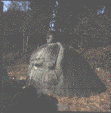
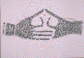

黒い手
三月の半ばに、パトカーに乗った。占有離脱物横領罪を犯したからである。占有離脱物横領罪といっても、ほとんどの方が、何のことやらと思われるだろう。私もその罪名を聞くまで、まったく知らなかったので、偉そうなことは言えないが、要するに、自転車泥棒のような罪を言うのである。といってもおわかりにならないだろう。わかってもらうためには、やはり私の体験を記すしかないと思われる。仕方がないので、恥をしのんで以下に記す。
私は写真屋へ行くため、職場に置いてある自転車に乗って駅の方に向った。踏切りで一時停車して、電車の通過を待っていると、お巡りが寄ってきた。
「もしもし、この自転車はどうされました？」
小生黙秘。
「ちょっとお話を伺いたいので、交番まで来てくれませんか」
「どうして」
「この自転車には、登録証がついてませんね」
「そんなこと知りませんよ」
「おやっ、何故知らないんです？」
「まったく嫌んなっちゃうな。このくそ忙しいのに説明しろって言うの？」
「時間はとらせませんから」
「じゃ、とにかく写真を取ってくるから待っててよ」
「いや、待つのは……」
「何で？ 逃げると思ってんの？」
お巡り黙秘。
「まったく嫌んなっちゃうな。馬鹿じゃないの？」
そこへ、もう一人お巡り現れる。
「どうした？」
|
二人でひそひそ話しながら、するどい視線を時折小生に送ってくる。あぁ、この若いお巡りたち、何考えてんのと思っているうちに、一人が無線で自転車の型と色を報告し「調査願います」とやりだす。そして、もう一人が「自分が写真屋へ一緒に行きます」と言って寄ってくる。
|
 |
私はお巡りのひもつきで、写真を取りに行く。さすがにお巡りは、お店に入らず、外からじっと私を見はっていた。写真を受け取って外へ出ると、無線報告をしていた彼もやってきた。三人そろったところで、私は二台の白い自転車にはさまれて、下北沢の交番まで連れていかれた。
狭い交番には、五名程のお巡りがいて、息苦しいものを感じた。すぐに机の前に座らされ、私は説明に入らなければならない。
この自転車は、一年以上も前、日本民芸館の門前に置きっぱなしにされていた。来館者の邪魔になったが、持ち主が取りに来るかとも思い、しばらくそのままにしておいた。でも、誰も来ないので、道路ぞいの塀ぎわに移動した。そして、二ヶ月も過ぎていろいろ不都合なので、警察に何とかならないかと電話した。しばらくして、警官らしい人間が来て、手帳に何か記して帰った。私はこれで何とか片付くと思って喜んだ。しかし、半年たっても何ともならず、自転車は放置されたままだった。朝の掃除や、大型車が来た時など大変邪魔で、迷惑であった。仕方がないので、館の自転車置き場に、移動させた。それ以来、館の自転車を誰かが使っている時などに、その自転車を使いもした。でも、たまにである。今日も、そのたまたまの日で、使うのが人情というものだろう。
|
 |
この説明に対しお巡りは、自分の物でないものは、移動させただけでも罪になると答えた。私はそんな馬鹿な、とあきれた。そして「じゃ、門前で迷惑をかけてるものを、何とかしたいと思ったらどうするの？」と尋ねた。「その時は警官を呼んで移動させるのだ」と返事が返ってきた。
|
私は再びあきれて「こちらは一度警察に電話して、警官らしき者も呼んでるのに……。そんな努力に答えられない警察は、一体全体何なのだ？」と言った。すると「それは本当に警官だったのか？」と、逆に尋ねてきた。
一年も前の記憶は、咄嵯に答えるには曖昧なものである。正直であれば正直であるほど、それを証明できない。私は次第に眼の前が暗くなるのを感じる……。
飛躍した論理を使って、移動させるだけで罪だという者の前で、サドルにまたがり、何百メートルも走った私は、何を言ってもだめだろう。それどころか自転車にふれて、あるいは乗って、一度でも移動させた者は、皆罪になると言いだしたお巡りたちの言葉を聞いて、私の頭には、何人もの顔が浮んできた。
やばい！ 彼らに罪が及ぶことを防がなければならない。卑怯者にならないためには、私一人の罪にしておかなければならない。そう思った。そして、いた仕方なく警官の論理に従うことを決心した。
お巡りたちはまるでタクシーでも呼ぶように、パトカーを呼んで、梅ヶ丘にある北沢署に私を運んだ。パトカーが来る間、私は警官数人を前にして「これは私の一人言だと思って、黙って聞いていてくれ。そうしないと、私のストレスは発散されないから」と言って、お巡りたちの理不尽な行為をののしり、「警察のエネルギーは、今跋扈している政治家や官僚の不正にこそ向けられるべきである」と、こんな形で警察とかかわる人間のほとんどが語るパターン通りのことを話して騒いだ。
腹の虫のおさまらない私は、パトカーの中でも、踏切りで声をかけてきたＩという若いお巡りに「誰かつかまえて、パトカーを出したら、消防の連中のように手当でももらえるのかね？」と尋ねた。彼の代りに、助手席に座っていた機動隊のような警官が「手当が出るんならもっとたくさんの人間をつかまえるよ」とすごんで、微妙なことを言った。私は国家に金を出させて、本当に悪い政治家や官僚をたくさんつかまえるべきだと、パターン語をまた使った。妙な沈黙がおとずれた。
|
パトカーは、北沢署に着いた。小部屋に通され、少し待たされた。やがてハンサムな大男が書類を持ってきた。住所、氏名、職業、年齢、身長、体重を書くようにとのことである。書く前に、これは何の書類かと尋ねた。微罪処分手続書であるという。何の罪なのかと聞いた。占有離脱物横領罪とのことである。いた仕方ないので、言われた通りにした。書いている間、ハンサム氏は何度も、軽微だという証拠のためのものだから我慢してくれと言った。
|
|
それから警官たちの執務室に通され、指紋をとられた。十本の指先全部と、両手全体を念入りにとられた。ハンサム氏が、一々、指とり手とりでやってくれた。近くにいた禿の上司が「お巣鷹山の飛行機事故の時、これがあった人は、すぐ身元が判明したんだよ」と、恩着せがましいことを言ってきた。「へえ、それは有難いですね」と言うと、「だから国民全部がとれば良いんだけどね……」と言った。
占有離脱物横領罪を犯した私が成さねばならないことは、すべて終了した。後は身柄引受人が来るのを待つだけである。私は館の同僚を指定した。待っている間、ハンサム氏と拳銃のこと、警棒のこと、手錠のこと等を話したりした。私の記憶にある警棒は、樫の木の棒みたいなものであったが、今は長さ一五センチ程の鉄パイプで、使用する際に大きく振ると、棒状の筒の中から釣竿みたいに二つの部分が飛び出して、長さ五〇センチ位のものになるのである。ハンサム氏は腰からはずして、私のために長くして見せてくれた。驚いたことに、刀の丸鍔みたいなものも付いていて、おもしろかった。
ハンサム氏が席をはずした時、何気なく壁を見た。職務質問による検挙数と書いたグラフが張ってある。三地域にわけた棒グラフである。第一地域が十二人でトップだった。警察も営業成績表みたいなものを示して、職員をあおるのかと思っていたら、年配の警官が「セールスのグラフみたいでしょう」と苦笑いしながら声をかけてきた。
しばらく話しているうちに、彼のかつての同僚に、相模湖町の寸沢嵐に住んでいた人がいたなどと言う。私は何となく親しみを覚えた。そう言えばこのおじさんは、顔を合わせた時から、私に同情のまなざしを向けていたなと思ったりした。そう思ってほろっとしかけた所に、柄受人（警察用語）が来た。
私は署の環境にすっかり慣れて、笑みさえ浮かべているのに、彼の表情はといえば、緊張そのものであった。その顔を見て、私はようやく、自分の立場を自覚した。
気の毒な役廻りを負った彼も、小部屋に連れていかれた。そして、書類にいろいろ書かされ、印を押して、私と共に北沢署を出ることになった。
署を出る時、玄関まで見送ってくれたハンサム氏やＩや年配のおじさんに、
「じゃ、またね」
と、別れの挨拶をしたのには、我ながら驚いた。
「じゃ、またはないか」と、私が笑って皆に言うと、おじさんは、「この事はどこにも知れないし、決してあなたの不利益にはなりませんから」と、私にささやいた。Ｉはその後ろで、すまなさそうな顔をしていた。複雑な思いで、私は署をあとにした。
以上が占有離脱物横領罪を犯した私の体験である。少しはその罪がおわかりいただけたかと思うが如何。
私はこの後、ゲンなおしのために、柄受人と、私の身を案じて、コートと鞄を持ってきてくれた若い女性と三人で、経堂の赤提灯に飲みに行った。
注文の前に、おしぼりが出た。手をふいた。白いおしぼりが、うす黒くなった。何故だと思って、手の平を見た。しわに黒い墨が入っている。あっ、指紋をとられた時の墨が、まだ残ってるんだ。浅い溝なのに、結構埋るもんだなと思って、じっと手の平を見つめた。見つめながら、墨色から私は拓本を想起した。
さて、そんな罪が縁で、御紹介することにした拓本二点である。
一つは赤提灯で思い出した信州、下諏訪の「万治の石仏」の部分拓で、もう一つは、それだけでは寂しいかと思って、おまけで紹介することにした、やはり信州の野仏の拓である。「万治の石仏」は、一九九七年に亡くなった岡本太郎の紹介で、世に知られるようになった石仏で、諏訪神社・下社の春宮の横ての奥にある。
かつては田圃の中にあったらしいが今は田圃を埋めて作ったさら地の中に、ぽつねんと座っておられる。
私はこの石仏が好きで、諏訪を通る時は必ずお参りすることにしている。
万治年間（一六五八〜一六六〇年）の作であるから、民間の石仏としてはかなり古いものだといえよう。大きなおむすび型の自然石を、そのまま仏体にみて、前面に浅彫りで、二本の腕と袈裟が刻まれている。そして両手は、拓に見られるように、印を組んでいる。
巨石の上には、素朴で意志の強そうな、これも巨大な自然石の顔が乗っている。お顔の大きな鼻と大きな耳が、異様な力を、この石仏に感じさせるようで、私は観るたびに感動する。そして、これを信州の無名の石工が彫ったことに思いをはせて、民芸への信頼を強める。
帰り際に合掌して、仏様と顔を合わすと、私はいつも仏様の口から「行キナン 行クエ知ラデモ」という言葉が発せられるのに驚く。柳の心偈の四九番で、民芸をやる者への励ましの言葉である。
拓は十数年も前に、塩尻の友人がとったもので、ちょっと見には、意味不明の陳腐なものにしか見えないが、私にとっては先に記したような理由で、大切な宝なのである。
もう一点は、松本周辺の六地蔵の一つではと考える拓である。
何故なら、これは柳宗悦の指導を受けて、信州の石仏の拓本をとり回っていた松本の森泉音三郎氏の手によるものだからである。
柳は早くから、信州の野にある民間の石仏の美を認め、その姿を拓にとって、多くの人にその美しさを見てもらいたいと思っていた。信州に民芸運動の同志が増えるに従い、いつしか柳のそんな思いが、森泉氏にも知れた。森泉氏は拓をとってみることにした。森泉氏は表具師だったので、紙を扱うのには慣れていた。柳の適切で情にあふれた言葉に励まされ、彼は信州の野仏や道祖神や名号の拓をたくさんとった。そして、やがて拓本という地味な世界に、美しい大輪の花を開かせる事に成功した。
これは、当時の森泉氏の情熱の仕事の一つで、ずいぶん昔、森泉氏からいただいたものである。
天を仰ぐような地蔵の姿に、柳と森泉氏の往時の姿が重なり、私は見るたびに感動させられている。
ひょんなことから御登場いただいた信州の仏様の黒い手と、黒い御姿に、小生の犯した罪をざんげして、ここらでこの稿を終ることにしよう。
|